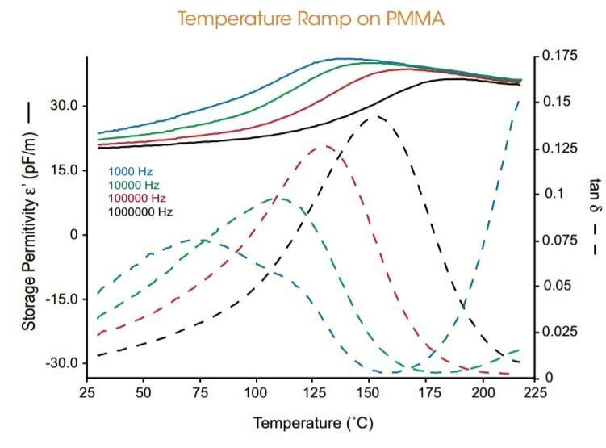

The ARES-G2 DETA is an accessory which expands the testing capability of the ARES-G2 rheometer to measure the response of materials by characterizing its capacitive and conductive properties. In dielectric analysis, an oscillating electrical field (AC field) is applied to the sample – some of the applied charge is stored in the sample (capacitance), while the rest is dissipated through the sample (conductance). This ability to store and conduct charges is strongly dependent on the material’s relaxation properties and the ion mobility inside the sample. Dielectric analysis is a powerful technique for characterizing polar materials such as PVC, PVDF, PMMA and PVA, for investigating the stability of phase separating systems, and for monitoring curing kinetics of materials such as epoxy and urethane systems. Since dielectric analysis offers a range of frequencies beyond the typical 100 Hz limit of traditional dynamic mechanical analysis, it is often used as a complementary material characterization technique.
Dielectric temperature ramp at multiple frequencies
The figure shows a temperature ramp on a poly (methyl methacrylate), PMMA, sample at four different dielectric frequencies ranging from 1 kHz to 1 MHz. At low temperatures, below the transition, the magnitude of the storage permittivity (ε’) decreases as the dielectric frequency is increased. A similar response is also seen in the dielectric tan(δ) signal as well, which represents the ratio of the loss permittivity (ε”) to the storage permittivity (ε’). As the temperature is increased, the peak of the transition in tan(δ) moves to higher temperatures with increasing frequency – this reveals a shift in the dipole relaxation times to shorter time scales as the polymer chain mobility increases and demonstrates the powerful information that can be obtained from dielectric testing.

Phase Separation in cosmetic creams
The combination of rheological and dielectric testing can be applied to evaluate the temperature stability of materials such as food and cosmetic products. The figure shows data collected on two water-based cosmetic creams that were cooled from 25 °C to -30 °C. The rheology data, evaluated by the storage modulus (G’), shows that the POND’S® cream undergoes a sharp increase in the modulus at -18 °C whereas the NIVEA® cream exhibits a more continuous change in the modulus over the entire temperature range. The large jump in the POND’S cream rheology data could be interpreted as an indication of instability. However, the simultaneous collection of dielectric data gives additional insight into the behavior of these materials.
The plot also shows the loss permittivity (ε”) signal that quantifies the change in the ion mobility, primarily dictated by the water phase in these samples. The NIVEA cream shoes a two decade increase in ε” on cooling compared to a very small change in the POND’S cream. The large increase in ε” is due to increased ion mobility in the material as the water phase separates.
With this additional information, it can be seen that the NIVEA sample undergoes phase separation, while the POND’S sample does not. When phase separation occurs during the cooling process, the size of the water phase increases, gradually changing the sample morphology – this leads to a gradual increase in the G’ signal. By contrast, the large change in G’ of the POND’S cream is the result of a transition that is due to a more stable and uniform morphology.